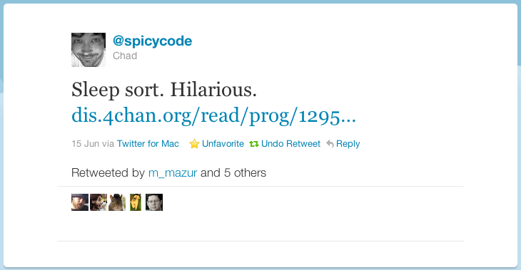
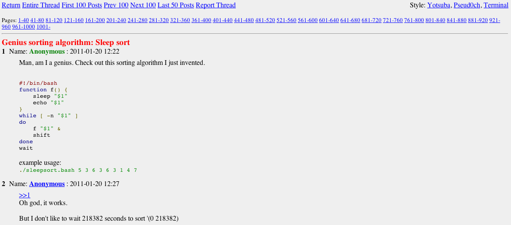
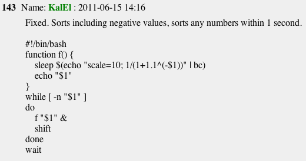
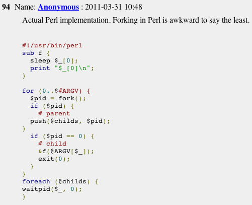
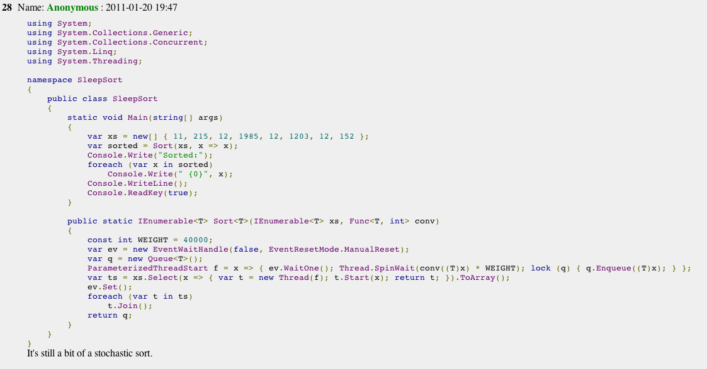
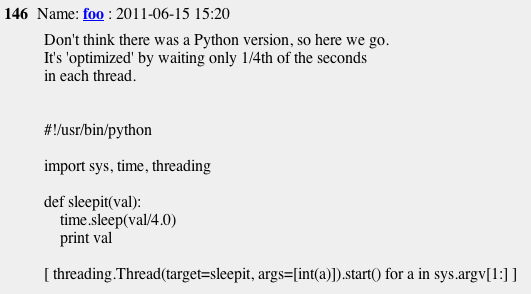
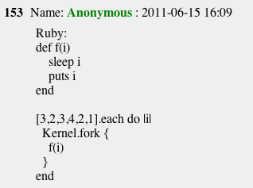

Mani Tadayon

- @bwsr_sr
- github: bowsersenior
It started with a tweet...

...and a 4chan discussion
- http://dis.4chan.org/read/prog/1295544154
- 
Implementations in multiple languages:
- 


- 
- also F#, lua, Haskell, C, C++ and more
- And ruby:
- 
Take it to the next level:
# see https://gist.github.com/1028467
class Array
def sleep_sort
semaphore = Mutex.new
[].tap do |a| # start with an empty array to hold sorted results
self.map do |e| # iterate over every element of this array instance
Thread.new do # create a Thread for each element
sleep e.to_f/1000 # sleep longer for bigger numbers
semaphore.synchronize do # wrap in Mutex to prevent race conditions
a << e # wake up and add to the results array
end
end
end.each do |t| # iterate over every thread...
t.join # ...and execute it
end
end
end
end It works:
[12,3,2,1000,22].sort
# => [ 2, 3, 12, 22, 1000 ]
[12,3,2,1000,22].sleep_sort
# => [ 2, 3, 12, 22, 1000 ]Benchmark it:
require 'benchmark'
big_arr = []
50.times do # use a small number to ensure results are sorted right
big_arr << Random.rand(1000)
end
sorted = []
sleep_sorted = []
Benchmark.bm do |x|
x.report { sorted = big_arr.dup.sort }
x.report { sleep_sorted = big_arr.dup.sleep_sort }
end
raise "sleep sort failed!" unless sorted == sleep_sorted
# results on ruby 1.9.2
# => user system total real
# 0.000000 0.000000 0.000000 ( 0.000026)
# 0.010000 0.010000 0.020000 ( 0.997363)Thanks for listening!
- Mani Tadayon
- @bwsr_sr
- github: bowsersenior
- http://bit.ly/rubysleepsort